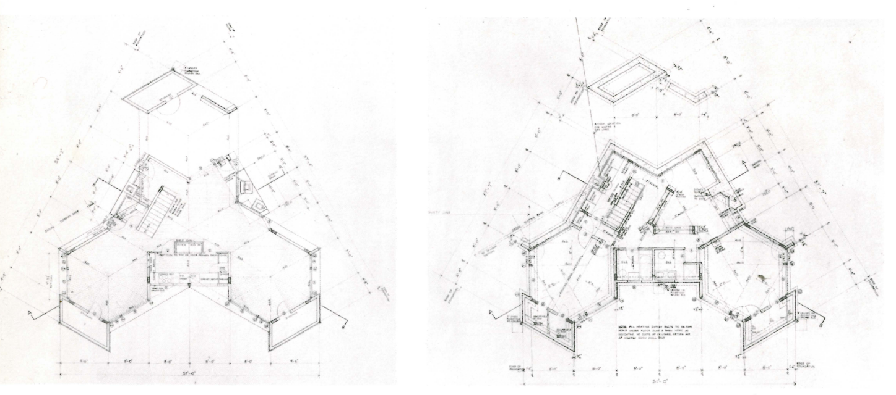
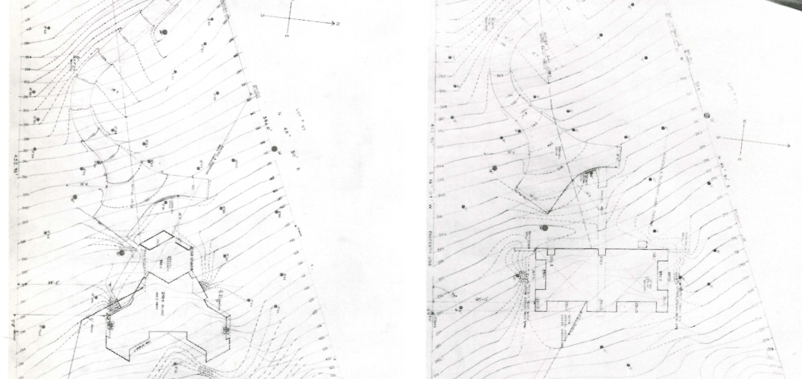
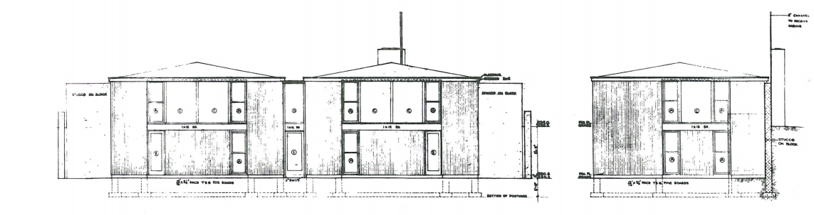

La residencia para los Shapiro fue inicialmente diseñada con forma hexagonal. Este diseño, interesado en no molestar o manipular el entorno arbolado de la parcela, también mantenía una doble separación entre la planta superior y la planta inferior. La primera para el diario y la segunda para la vida nocturna. La primera fase de la casa acabó siendo poco económica para los Shapiro y Kahn tuvo que adaptar el diseño.

Idea original de Louis Kahn
El nuevo diseño de la Casa Shapiro seguía manteniendo la estructura divisoria de día/noche pero la forma de la casa habría cambiado de ser hexagonal a un plano ortogonal. Esta división entre las dos plantas permitía unas mejores vistas del rio, que se encontraba cerca de la vivienda, y una mejor accesibilidad.

Idea Original / Idea Final
La planta superior es donde se encuentra la entrada principal a la vivienda. La casa, en planta, consiste en un pasillo anexado por un cuadrado a cada lado que se modela para una mejor distribución del espacio (explicación de forma planimétrica simple). En esta planta están el salón y el comedor, salas principales de esta planta y por ello ocupan el mayor espacio. En el centro están las escaleras para descender a la planta inferior y la cocina. En las zonas exteriores del cuadrado se encuentran habitaciones de almacenamiento.
La planta inferior mantiene las paredes exteriores que se extienden de la planta superior. En esta planta, la "casa nocturna" la distribución se cambia para que haya una habitación extra en lado norte, donde en la planta superior se encuentra el salón. Se encuentran entonces, un dormitorio pequeño, un estudio y un dormitorio principal, además de salas de almacenamiento, salas de mantenimiento y baños. La escalera, en el centro, da a un pasillo/recibidor que conecta las habitaciones.

Alzado trasero / Alzado derecho
©2021 Carlos Canedo Leite